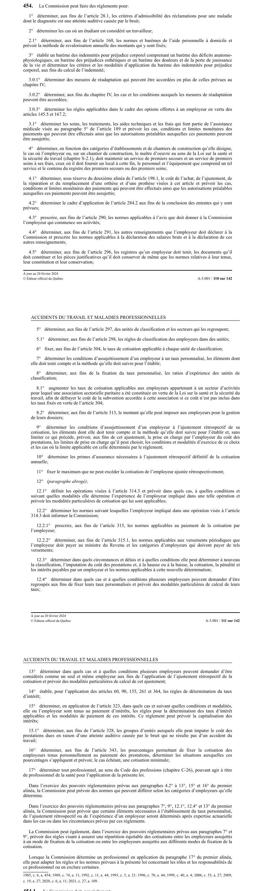

art-454-LATMP : réclamation
La Commis jon peut faire des réglements pour: 1° déterminer, aux fins de article 28.1.
- Les critéres d'admis dont le diagnostic est une atteinte auditive causée par le bruit.
- Déterminer les cas ot un étudiant est considéré un travailleur; 2.
🌐 LegisQuébec · 📄 PDF officiel (page 110)
Texte officiel
La Commission peut faire des règlements pour:
1° déterminer, aux fins de l’article 28.1, les critères d’admissibilité des réclamations pour une maladie dont le diagnostic est une atteinte auditive causée par le bruit;
2° déterminer les cas où un étudiant est considéré un travailleur;
2.1° déterminer, aux fins de l’article 160, les normes et barèmes de l’aide personnelle à domicile et prévoir la méthode de revalorisation annuelle des montants qui y sont fixés;
3° établir un barème des indemnités pour préjudice corporel comprenant un barème des déficits anatomo- physiologiques, un barème des préjudices esthétiques et un barème des douleurs et de la perte de jouissance de la vie et déterminer les critères et les modalités d’application du barème des indemnités pour préjudice corporel, aux fins du calcul de l’indemnité;
3.0.1° déterminer des mesures de réadaptation qui peuvent être accordées en plus de celles prévues au chapitre IV;
3.0.2° déterminer, aux fins du chapitre IV, les cas et les conditions auxquels les mesures de réadaptation peuvent être accordées;
3.0.3° déterminer les règles applicables dans le cadre des options offertes à un employeur en vertu des articles 145.5 et 167.2;
3.1° déterminer les soins, les traitements, les aides techniques et les frais qui font partie de l’assistance médicale visée au paragraphe 5° de l’article 189 et prévoir les cas, conditions et limites monétaires des paiements qui peuvent être effectués ainsi que les autorisations préalables auxquelles ces paiements peuvent être assujettis;
4° déterminer, en fonction des catégories d’établissements et de chantiers de construction qu’elle désigne, le cas où l’employeur ou, sur un chantier de construction, le maître d’oeuvre au sens de la Loi sur la santé et la sécurité du travail (chapitre S-2.1), doit maintenir un service de premiers secours et un service de premiers soins à ses frais, ceux où il doit fournir un local à cette fin, le personnel et l’équipement que comprend un tel service et le contenu du registre des premiers secours ou des premiers soins;
4.1° déterminer, sous réserve du deuxième alinéa de l’article 198.1, le coût de l’achat, de l’ajustement, de la réparation et du remplacement d’une orthèse et d’une prothèse visées à cet article et prévoir les cas, conditions et limites monétaires des paiements qui peuvent être effectués ainsi que les autorisations préalables auxquelles ces paiements peuvent être assujettis;
4.2° déterminer le cadre d’application de l’article 284.2 aux fins de la conclusion des ententes qui y sont prévues;
4.3° prescrire, aux fins de l’article 290, les normes applicables à l’avis que doit donner à la Commission l’employeur qui commence ses activités;
4.4° déterminer, aux fins de l’article 291, les autres renseignements que l’employeur doit déclarer à la Commission et prescrire les normes applicables à la déclaration des salaires bruts et à la déclaration de ces autres renseignements;
4.5° déterminer, aux fins de l’article 296, les registres qu’un employeur doit tenir, les documents qu’il doit constituer et les pièces justificatives qu’il doit conserver de même que les normes relatives à leur tenue, leur constitution et leur conservation;
5° déterminer, aux fins de l’article 297, des unités de classification et les secteurs qui les regroupent;
5.1° déterminer, aux fins de l’article 298, les règles de classification des employeurs dans des unités;
6° fixer, aux fins de l’article 304, le taux de cotisation applicable à chaque unité de classification;
7° déterminer les conditions d’assujettissement d’un employeur à un taux personnalisé, les éléments dont elle doit tenir compte et la méthode qu’elle doit suivre pour l’établir;
8° déterminer, aux fins de la fixation du taux personnalisé, les ratios d’expérience des unités de classification;
8.1° augmenter les taux de cotisation applicables aux employeurs appartenant à un secteur d’activités pour lequel une association sectorielle paritaire a été constituée en vertu de la Loi sur la santé et la sécurité du travail, afin de défrayer le coût de la subvention accordée à cette association si ce coût n’est pas inclus dans les taux fixés en vertu de l’article 304;
8.2° déterminer, aux fins de l’article 313, le montant qu’elle peut imposer aux employeurs pour la gestion de leurs dossiers;
9° déterminer les conditions d’assujettissement d’un employeur à l’ajustement rétrospectif de sa cotisation, les éléments dont elle doit tenir compte et la méthode qu’elle doit suivre pour l’établir et, sans limiter ce qui précède, prévoir, aux fins de cet ajustement, la prise en charge par l’employeur du coût des prestations, les limites de prise en charge qu’il peut choisir, les conditions et modalités d’exercice de ce choix et les cas où la limite applicable est celle déterminée par le règlement;
10° déterminer les primes d’assurance nécessaires à l’ajustement rétrospectif définitif de la cotisation annuelle;
11° fixer le maximum que ne peut excéder la cotisation de l’employeur ajustée rétrospectivement;
12° (paragraphe abrogé);
12.1° définir les opérations visées à l’article 314.3 et prévoir dans quels cas, à quelles conditions et suivant quelles modalités elle détermine l’expérience de l’employeur impliqué dans une telle opération et prévoir les modalités particulières de cotisation qui lui sont applicables;
12.2° déterminer les normes suivant lesquelles l’employeur impliqué dans une opération visée à l’article 314.3 doit informer la Commission;
12.2.1° prescrire, aux fins de l’article 315, les normes applicables au paiement de la cotisation par l’employeur;
12.2.2° déterminer, aux fins de l’article 315.1, les normes applicables aux versements périodiques que l’employeur doit payer au ministre du Revenu et les catégories d’employeurs qui doivent payer de tels versements;
12.3° déterminer dans quels circonstances et délais et à quelles conditions elle peut déterminer à nouveau la classification, l’imputation du coût des prestations et, à la hausse ou à la baisse, la cotisation, la pénalité et les intérêts payables par un employeur et les normes applicables à cette nouvelle détermination;
12.4° déterminer dans quels cas et à quelles conditions plusieurs employeurs peuvent demander d’être regroupés aux fins de fixer leurs taux personnalisés et prévoir des modalités particulières de calcul de leurs taux;
13° déterminer dans quels cas et à quelles conditions plusieurs employeurs peuvent demander d’être considérés comme un seul et même employeur aux fins de l’application de l’ajustement rétrospectif de la cotisation et prévoir des modalités particulières de calcul de cet ajustement;
14° établir, pour l’application des articles 60, 90, 135, 261 et 364, les règles de détermination du taux d’intérêt;
15° déterminer, en application de l’article 323, dans quels cas et suivant quelles conditions et modalités, elle ou l’employeur sont tenus au paiement d’intérêts, les règles pour la détermination des taux d’intérêt applicables et les modalités de paiement de ces intérêts. Ce règlement peut prévoir la capitalisation des intérêts;
15.1° déterminer, aux fins de l’article 328, les groupes d’unités auxquels elle peut imputer le coût des prestations dues en raison d’une atteinte auditive causée par le bruit qui ne résulte pas d’un accident du travail;
16° déterminer, aux fins de l’article 343, les pourcentages permettant de fixer la cotisation des employeurs tenus personnellement au paiement des prestations, déterminer les situations auxquelles ces pourcentages s’appliquent et prévoir, le cas échéant, une cotisation minimale;
17° déterminer tout professionnel, au sens du Code des professions (chapitre C-26), pouvant agir à titre de professionnel de la santé pour l’application de la présente loi.
Dans l’exercice des pouvoirs réglementaires prévus aux paragraphes 4.2° à 13°, 15° et 16° du premier alinéa, la Commission peut prévoir des normes qui peuvent différer selon les catégories d’employeurs qu’elle détermine.
Dans l’exercice des pouvoirs réglementaires prévus aux paragraphes 7°, 9°, 12.1°, 12.4° et 13° du premier alinéa, la Commission peut prévoir que certains éléments nécessaires à l’établissement du taux personnalisé, de l’ajustement rétrospectif ou de l’expérience d’un employeur seront déterminés après expertise actuarielle dans les cas ou dans les circonstances prévus par ces règlements.
La Commission peut également, dans l’exercice des pouvoirs réglementaires prévus aux paragraphes 7° et
9°, prévoir des règles visant à assurer une répartition équitable des cotisations entre les employeurs assujettis à un mode de fixation de la cotisation ou entre les employeurs assujettis aux différents modes de fixation de la cotisation.
Lorsque la Commission détermine un professionnel en application du paragraphe 17° du premier alinéa, elle peut adapter les règles et les normes prévues à la présente loi concernant les rôles et les responsabilités de ce professionnel ou en exclure certaines.
Texte de l’article 454 LATMP, extrait de la couche texte du PDF officiel (page 110), sans OCR ni retouche. La capture ci-dessous et le PDF font foi.
{kind=link}

Toucher l'image pour l'agrandir🔗 Ouvrir a cette page : LATMP.pdf : page 110 · texte a jour au 20 février 2024
Voir aussi
- 🔢 Sous-article : art. 454.1 · définition : laCon sion doit, par réglement 1° déterminer des maladies aux fins de l'application de la présomption de maladie professionnelle prévue l'article 29 ainsi que les conditions particuliéres en lien avec ces maladies telles que la durée exposition & un contaminant.
- 🔧 Modifié par : LMRSST art. 109, LMRSST art. 110
- ↑ Loi : LATMP
Pages qui pointent ici (4)
- art-109-LMRSST : modifie l'art. 454 LATMP Recueil législatif
- art-110-LMRSST : insère l'art. 454.1 LATMP Recueil législatif
- art-455-LATMP : projet règlement que commission Recueil législatif
- LMRSST : Chapitre I : Modifications à la LATMP Recueil législatif